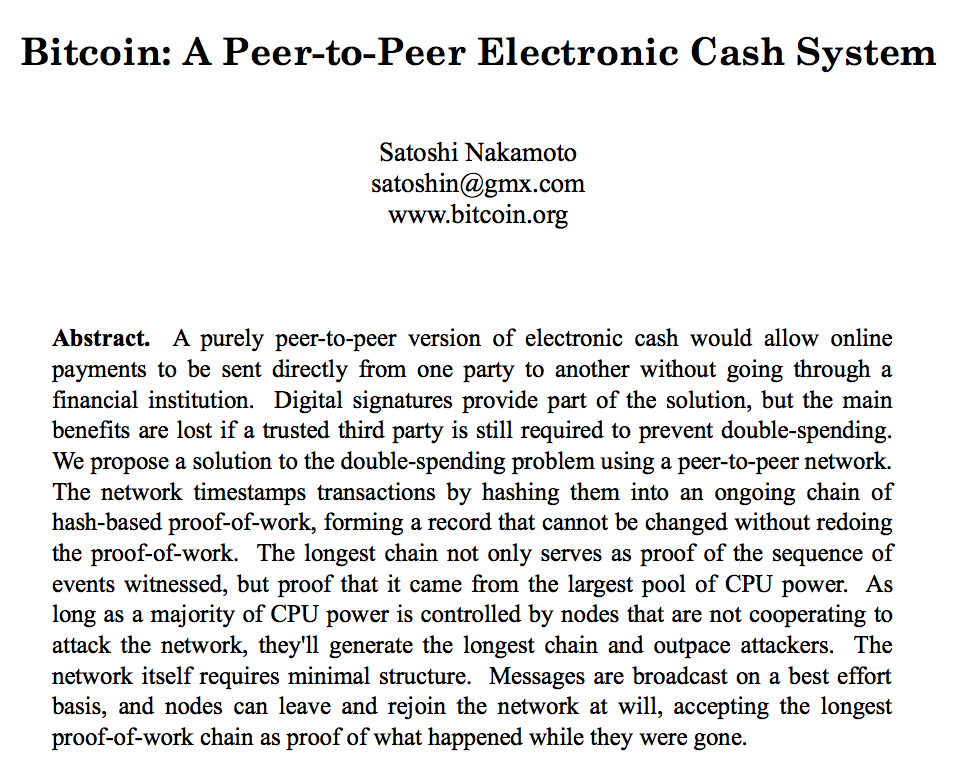
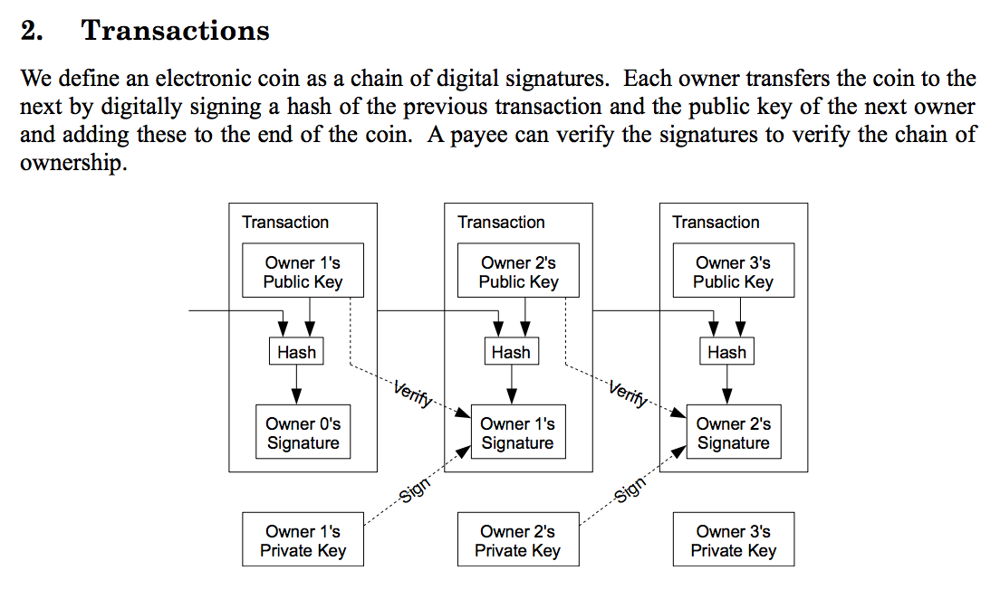
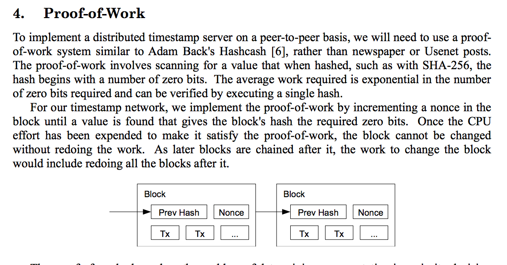
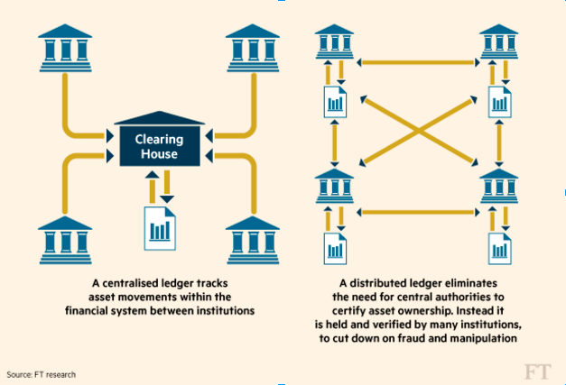
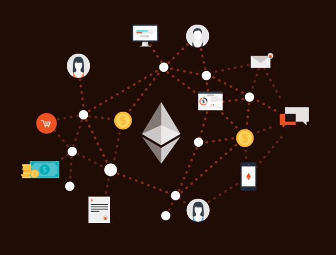
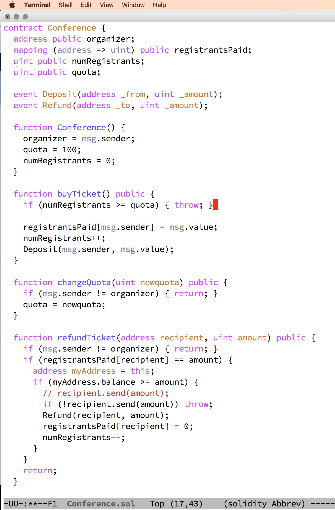

Blockchain Technology
and
Document Management
Friends or Foes?
Created by roland@tritsch.org / @innolocity
Blockchain Technology
The hype and the reality ...
Created by roland@tritsch.org / @innolocity
Blockchain Technology
The hype and the reality ...
... and what it got to do with Nitro :)
Created by roland@tritsch.org / @innolocity
Why are we talking about this?
We are talking about this because ...
Why are we talking about this?
We are talking about this because ...
... everything is (going to be) better with blockchain :)
Today
- Hype vs. Reality
- Blockchain 101
- Crypto Currencies 101 (e.g. BitCoins)
- Document Management (using Blockchains) 101
Hype - Positive
- Going to kill banks and topple governments
- Going to give rise to the Internet of Value
- Will replace bank acounts, credit cards and cash (soon!)
- Will make all of us rich ... fast (lets quit our day jobs and get into bitcoin mining ... now!!!)
Hype - Negative
- Crypto-currencies are illegal and dangerous (for individuals and organisations)
- This is a fade. It will never work and in 20 years from now we will laugh about it
- It is a Ponzi-Scheme
- We do not even know, who created this "thing"
Reality
- The underlying technology (blockchain) is sound (open source; the math behind the concept checks out; ...)
- Using blockchain technology for crypto-currencies is just one application (name-coin; smart commodities; smart contracts; ...)
- Democratizing access to information had a profound impact on the planet. I expect that democratizing access to financial services that are based on blockchain technology will have a similar (or bigger) impact (in the next 10 years)
In the beginning ...
What is the problem?
- Identity
- Double spending
How is blockchain technology solving these problems?
- Identity - Easy
- Double spending - Not really
Concepts
Transaction
Concepts
Blocks & Blockchains
Concepts
Distributed Ledger
Disclaimer
Currencies

What do you need?
Ethereum
Blockchain on Steroids
Ethereum
Solidity - Smart Contract Language
Imagine ...
- ... there are poeple out there who have a lot of documents and they need to edit, share, collaborate, sign ... these documents ... and need to track where the most recent one is ... and right now they are struggling ... and to be brutally honest ... we have to recognize that there is no real good solution out there to really address the problem ... and I will try to explain why that is in a minute
Imagine ...
- ... we would be able to "finger print" a document to make sure we can clearly ID it and also detect when it gets changed
- ... we build and host a large database to track how these "finger prints" move around (means we always know where the latest one is)
- ... and as a result the customers are screwed ... again!!!
But now imagine ...
- ... somebody would setup a publicly available, globally distributed ethereum blockchain to actually hold the history of documents as they are edited and shared ... and would open-source the code you need to get your documents into that blockchain ... and with that would be able to gurantee that nobody can tamper with the history of a document ... without relying on a trusted 3rd party